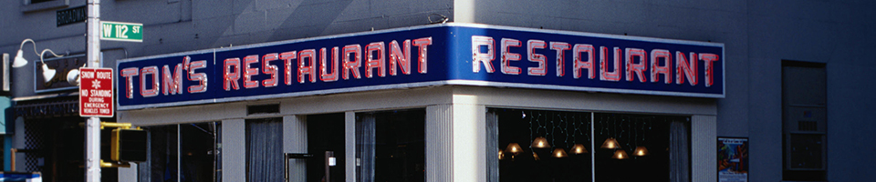

Monk's Cafe
"The Coffee Shop"
Make A Reservation
Existing Reservations
| Name | Date |
|---|---|
Come Dine With Us
Customer Reviews

"Big lettuce, big carrots, tomatoes like volleyballs."
— Jerry Seinfeld, on The BIG Salad
| Name | Date |
|---|---|
"Big lettuce, big carrots, tomatoes like volleyballs."
— Jerry Seinfeld, on The BIG Salad